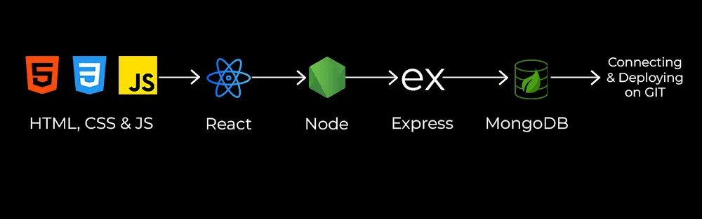

Learn More About MERN Stack

Deep Dive into the MERN Stack
MongoDB
MongoDB is a NoSQL database that stores data in JSON-like documents, which makes it flexible and scalable. It is designed to handle large volumes of data and can distribute data across many servers.
Key Concepts:
- Collections and Documents: MongoDB stores data in collections, which are analogous to tables in a relational database. Each collection contains documents, which are individual records formatted in BSON (Binary JSON).
- Schema Design: Unlike relational databases, MongoDB is schema-less, allowing for dynamic schema design.
- CRUD Operations: Create, Read, Update, Delete operations are performed using methods like insertOne, find, updateOne, and deleteOne.
- Aggregation: MongoDB provides powerful aggregation capabilities for processing data and computing results.
Express.js
Express.js is a minimalist web framework for Node.js that simplifies the process of building web applications and APIs.
Key Concepts:
- Middleware: Functions that execute during the lifecycle of a request to the server. Middleware can modify the request and response objects, end the request-response cycle, and call the next middleware function.
- Routing: Express uses a routing system to determine how an application responds to a client request to a particular endpoint, defined by a URL and an HTTP method (GET, POST, PUT, DELETE).
- Templating: Express supports various templating engines (e.g., EJS, Pug) for generating HTML on the server-side.
React
React is a JavaScript library for building user interfaces. It focuses on the view layer of an application and allows developers to create reusable UI components.
Key Concepts:
- Components: The building blocks of a React application. Components can be class-based or functional.
- JSX: A syntax extension that allows writing HTML-like code within JavaScript, making it easier to create React components.
- State and Props:: State is a component's local state, managed within the component. Props are inputs to a component that allow data to be passed from parent to child components.
- Lifecycle Methods: Methods that are called at different stages of a component's lifecycle, such as componentDidMount, componentDidUpdate, and componentWillUnmount.
- Hooks: Functions that let you use state and other React features in functional components (e.g., useState, useEffect).
Node.js
Node.js is a JavaScript runtime built on Chrome's V8 JavaScript engine. It allows developers to use JavaScript on the server-side to build scalable network applications.
Key Concepts:
- Event-Driven Architecture: Node.js uses an event-driven, non-blocking I/O model that makes it lightweight and efficient.
- Asynchronous Programming: Node.js relies heavily on callbacks, promises, and async/await to handle asynchronous operations.
- Modules: Node.js has a module system (CommonJS) that allows developers to organize code into reusable modules.
Conclusion
Combining your knowledge of web development and the MERN stack into a practical project will help consolidate your skills. MERN Stack offers an end-to-end framework to make the whole development process comparatively easier. It helps developers to make complex applications and also beginner-friendly for a newbie. The MERN stack is a JavaScript-based web development stack that consists of MongoDB, Express.
Back To Portfolio